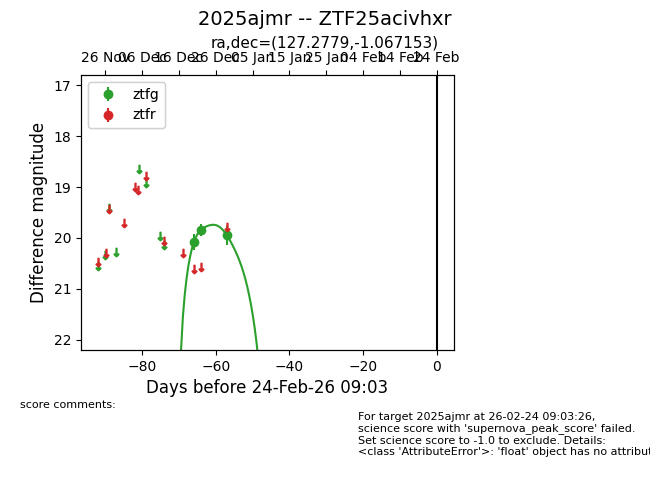
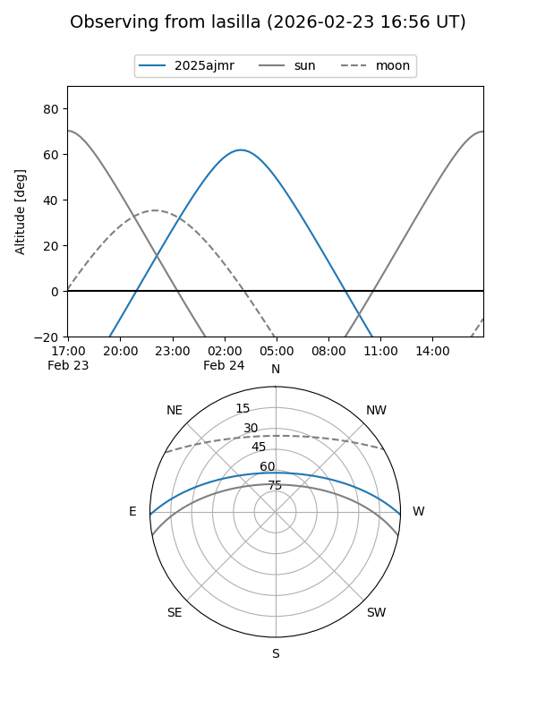
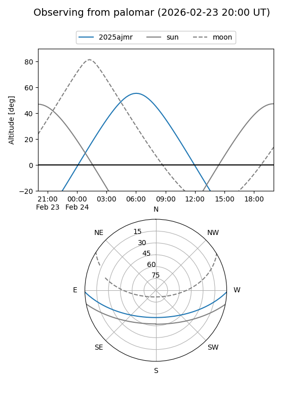

2025ajmr
Target 2025ajmr at 2025-12-31 18:01
Aliases and brokers:
FINK: link
Lasair: link
ALeRCE: link
TNS: link
YSE: link
alt names
ZTF25acivhxr (ztf,fink_ztf)
2025ajmr (tns,yse)
Coordinates:
equatorial (ra, dec) = 127.2779,-1.06715
equatorial (HMS+DMS) = 08:29:06.69,-01:04:01.75
galactic (l, b) = (225.6247,+21.06103)
Flags:
Photometry:
last ztfg=19.95
3 ztfg detections
Lightcurve

Visibility


Additional plots